Provable Ordering and Continuity in Vision-Language Pretraining for Generalizable Embodied Agents
AcTOL: Vision-Language Pretraining from Human Videos for Robot Learning
AcTOL learns ordered and continuous vision-language representations from human action videos for robot learning and language-conditioned manipulation.
Abstract
Pre-training vision-language representations on human action videos has emerged as a promising approach to reduce reliance on large-scale expert demonstrations for training embodied agents. However, prior methods often employ time contrastive learning based on goal-reaching heuristics, progressively aligning language instructions from the initial to the final frame. This overemphasis on future frames can result in erroneous vision-language associations, as actions may terminate early or include irrelevant moments in the end. To address this issue, we propose Action Temporal Coherence Learning (AcTOL) to learn ordered and continuous vision-language representations without rigid goal-based constraint. AcTOL treats a video as a continuous trajectory where it (1) contrasts semantic differences between frames to reflect their natural ordering, and (2) imposes a local Brownian bridge constraint to ensure smooth transitions across intermediate frames. Extensive imitation learning experiments on both simulated and real robots show that the pretrained features significantly enhance downstream manipulation tasks with high robustness to different linguistic styles of instructions, offering a viable pathway toward generalized embodied agents.
Method
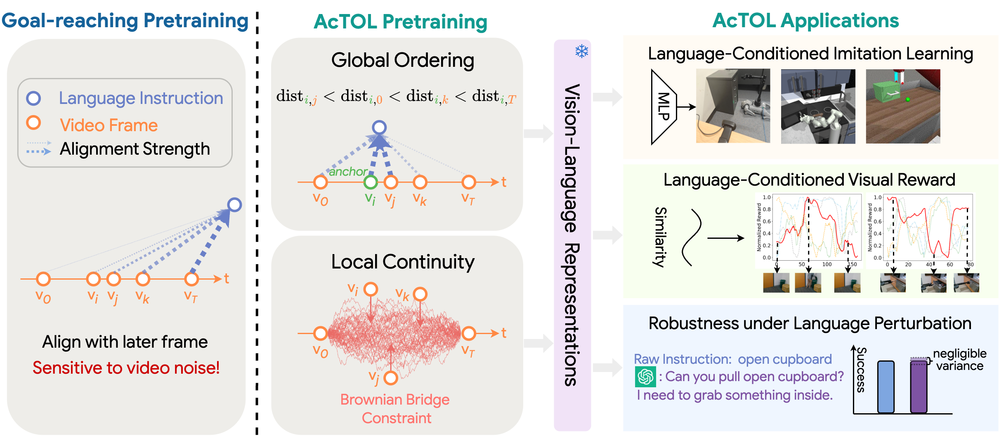
Comparison of existing goal-reaching pre-training strategies and the proposed AcTOL approach.
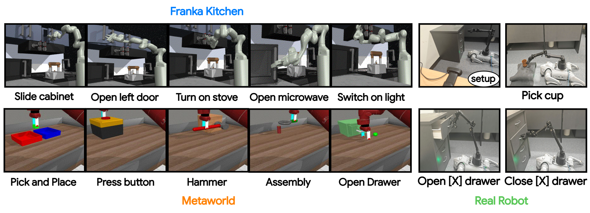
Policy learning environments, including 3 tasks with a real-world Unitree D1 robot arm and 5 tasks each in two simulation environments.
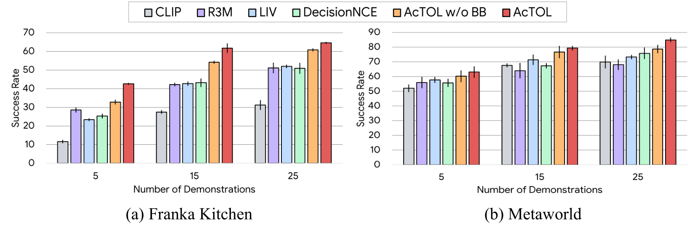
Comparison of language-conditioned behavior cloning results by AcTOL and existing methods.
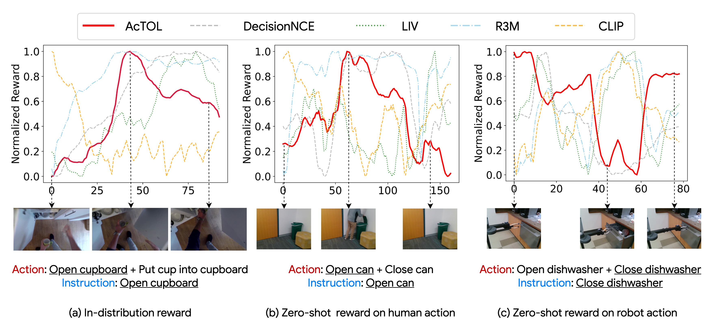
Visualization of the normalized zero-shot reward corresponding to different actions.
Real robot demos
Pick up cup
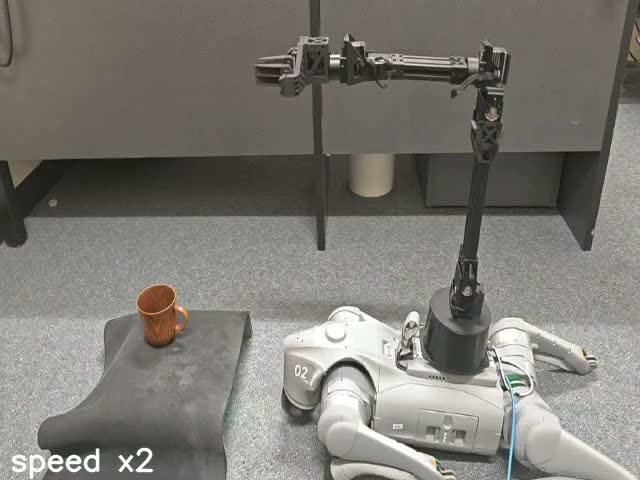
Open 1st drawer
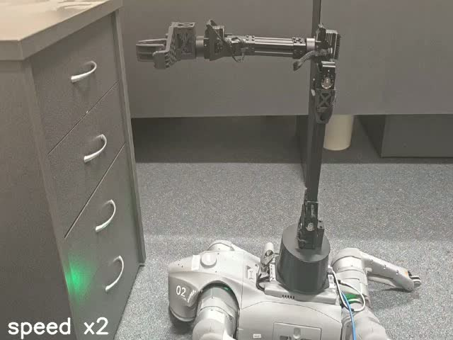
Open 2nd drawer
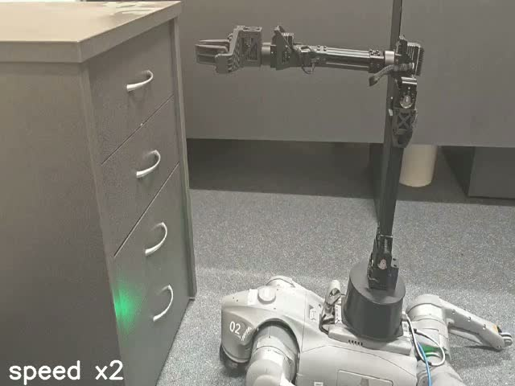
Open 3rd drawer
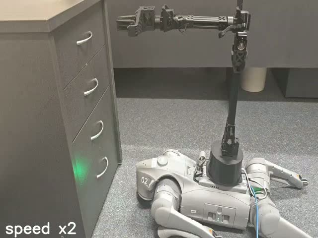
Close 1st drawer
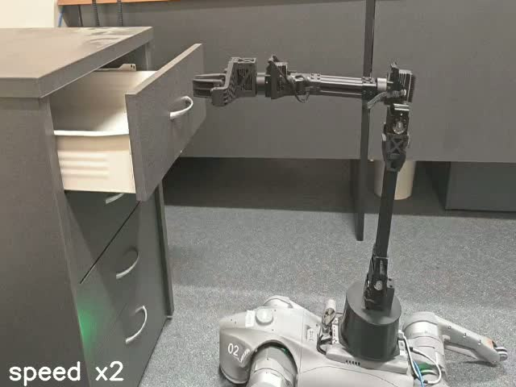
Close 2nd drawer
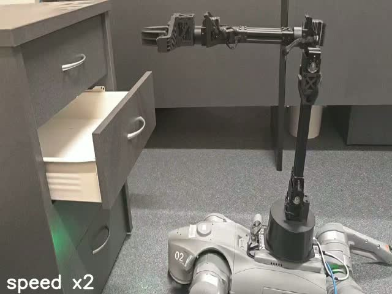
Close 3rd drawer
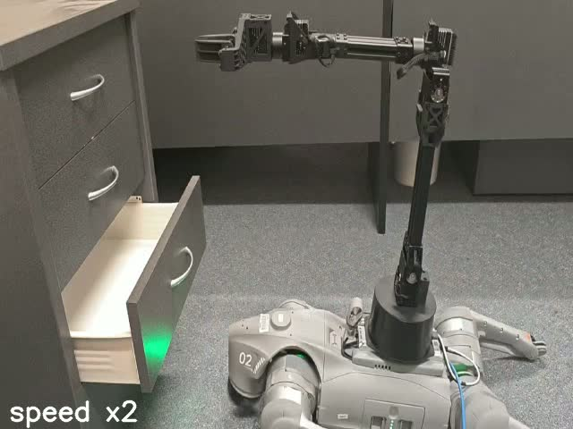
Close 4th drawer
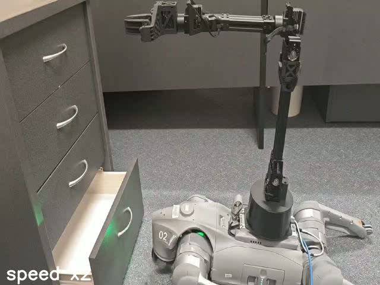
BibTeX
@inproceedings{zhang2025actol,
author = {Zhizhen Zhang and Lei Zhu and Zhen Fang and Zi Huang and Yadan Luo},
title = {Provable Ordering and Continuity in Vision-Language Pretraining for Generalizable Embodied Agents},
booktitle = {Advances in Neural Information Processing Systems},
volume = {38},
year = {2025},
doi = {10.52202/085713-2428},
url = {https://papers.neurips.cc/paper_files/paper/2025/hash/68fa5b1f1c024639685be9668fd5dc32-Abstract-Conference.html}
}